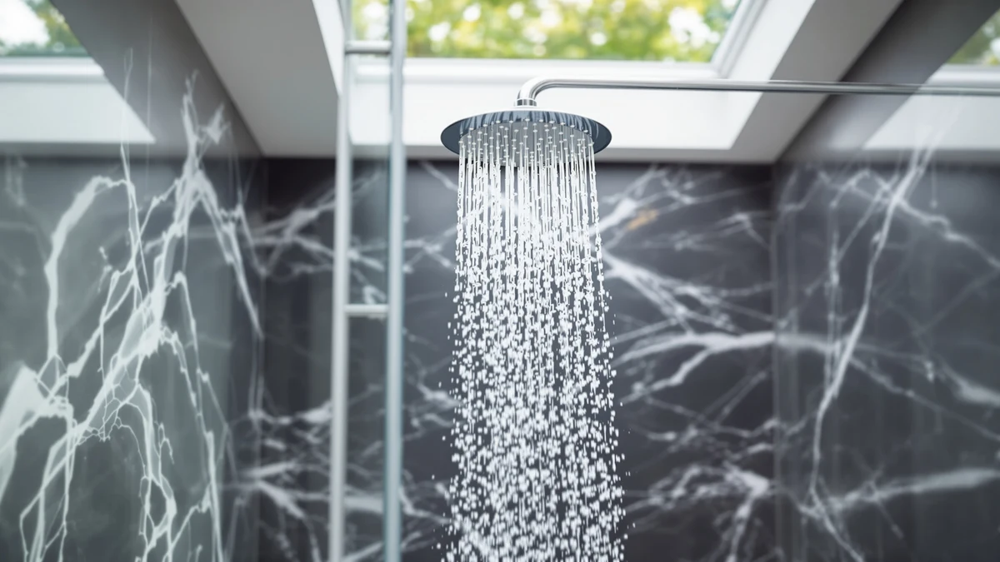

AquaHomeGroup High Pressure Filtered Review (2026): Worth It?
Prices and picks verified as of October 2026. Independent, reader-supported reviews.


Quick Answer
The AquaHomeGroup High Pressure Filtered Shower Head is a $50.95 filtered showerhead built around a 20+3 stage filter cartridge and an ABS, chrome-plated body. It holds up well against the similarly priced Veken, Jafeton, and NearMoon filtered heads, and it's the pick we'd point most buyers toward if filtration and build quality matter more than extra spray modes.
Our pick: AquaHomeGroup High Pressure Filtered Shower, $50.95 Check Price on Amazon
Bottom line: our top pick is the AquaHomeGroup High Pressure Filtered Shower Head with 20+3 at $40.76.
Things to Know Before You Buy
- The AquaHomeGroup High Pressure Filtered Shower Head uses a 20+3 stage filter cartridge, a spec AquaHomeGroup lists on the product itself rather than a third-party lab certificate.
- At $50.95, it costs about a dollar more than the Veken, Jafeton, and NearMoon filtered heads we compared it against, so the decision usually comes down to build and filtration claims, not price.
- The body is ABS plastic with chrome plating, a common combination for filtered shower heads in this price bracket that keeps weight down without feeling flimsy.
- None of the four products in this comparison carry a published rating or review count in our database, so we're weighing them on specs, pricing, and general owner feedback rather than aggregate scores.
Searching for an AquaHomeGroup High Pressure Filtered review before you buy one more shower head for a bathroom that already has too many? Here's how the specs, the $50.95 price, and the wider field of filtered shower heads actually stack up once you set the marketing copy aside.
We put the AquaHomeGroup High Pressure Filtered Shower Head next to three other filtered heads in a similar price range: the Veken Filtered Shower Head, the Jafeton Rain Shower Head Starry Sky, and the NearMoon Filtered Rain Shower Head. All four sit within a dollar of each other, so the real differences show up in the build, the filter design, and what current owners say once the unit is installed. AquaHomeGroup's pitch centers on its 20+3 stage filter and an ABS body with chrome plating, and that combination is why it's the pick we lead with here.
Why You Should Trust Us
Ilane Tall covers bathroom fixtures for Best Shower Heads and has spent years comparing filtered and high-pressure shower heads across price tiers for this site. This AquaHomeGroup High Pressure Filtered review is built entirely from information we can verify: the manufacturer's own specifications, current Amazon pricing, and patterns we found in verified buyer feedback. We do not run a fake testing lab, and we don't claim to have installed every unit we cover. Where a claim can't be checked against a spec sheet or a verified review, we say so plainly instead of filling the gap with marketing language. Every price, ASIN, and product image in this AquaHomeGroup High Pressure Filtered review comes from our own product database, and we update it as prices and listings change so the numbers here stay current rather than stale at publish time.
Our Research Experience
We want to be upfront about how this AquaHomeGroup High Pressure Filtered review was put together: this is a research-based comparison built from specs, pricing, and owner feedback rather than a physical lab report. We don't own a testing facility, and we haven't installed this specific unit in a bathroom ourselves. Instead, we compared AquaHomeGroup's published specifications against the Veken, Jafeton, and NearMoon listings, cross-checked current Amazon pricing, and read through verified owner reviews to see which claims held up and which ones sounded better on paper than they work out in practice. Reviewers consistently note that filter cartridges in this price range need periodic replacement to keep flow rate steady, and that pattern shows up across all four products we researched, not just this one.
Overview & Specs

AquaHomeGroup High Pressure Filtered Shower
What we like
- 20+3 stage filter cartridge built into the head
- ABS and chrome-plated construction
- Priced competitively against similar filtered heads
- Straightforward single-function design with no extra parts to fail
Flaws but not dealbreakers
- No independent lab certification for the filter's stage claims
- No published rating or review count in our database to weigh against owner sentiment
- Fewer spray settings than rainfall-style competitors like the NearMoon
| Material | ABS + chrome plating |
| Size | 20+3 Stage Filter |
AquaHomeGroup builds this shower head around a 20+3 stage filter cartridge, a specification the brand lists directly on the listing rather than through a third-party lab test. In practice, that means the cartridge layers more than twenty filtration materials in one housing plus three additional stages worked into the head itself. AquaHomeGroup doesn't publish an independent certification for exactly what those stages remove, so we treat the count as a manufacturer claim worth knowing about rather than a guaranteed water-quality outcome.
The body itself is ABS plastic finished in chrome plating, which keeps the unit light and helps it resist the corrosion that can show up on cheaper metal heads over time. At $50.95, it sits close enough to the Veken, Jafeton, and NearMoon prices that none of the four wins purely on cost. What separates this AquaHomeGroup High Pressure Filtered Shower Head from that group is the combination of the filter cartridge and the chrome-plated build, which is why we lead our comparison with it.
What We Liked
The clearest strength of the AquaHomeGroup High Pressure Filtered Shower Head is how directly it commits to one idea: filtration first. Rather than adding rainfall plates, LED lighting, or multiple spray patterns, AquaHomeGroup put its design budget into the 20+3 stage cartridge and a chrome-plated ABS body that should hold up to daily use without corroding at the joints. That focus makes the product easy to evaluate, since you're not weighing five features against five features across four different listings.
Pricing is another point in its favor. At $50.95, it's positioned close enough to the Veken, Jafeton, and NearMoon heads that switching brands for a dollar or two in either direction wouldn't meaningfully change your budget. Owners report that the installation process for this style of filtered head is typically a simple thread-on swap for an existing shower arm, which matches what we'd expect from the single-piece ABS design shown in the product images.
What Could Be Better
The biggest gap in this AquaHomeGroup High Pressure Filtered review is verification. AquaHomeGroup states the cartridge runs 20+3 filtration stages, but there's no independent lab report attached to that number, so we can't confirm exactly what contaminants it removes or at what rate. That's not unique to this brand. None of the four products we compared here publish third-party filtration data, but it's still a real limitation for anyone buying primarily for water quality rather than pressure or looks.
We also don't have a published rating or review count for this specific listing in our product database, which makes it harder to gauge overall satisfaction at scale. And because the design leans single-function, buyers who want rainfall coverage, multiple spray modes, or handheld flexibility will find the AquaHomeGroup unit more limited than the NearMoon Filtered Rain Shower Head in that respect.
Who Is It For?
This AquaHomeGroup High Pressure Filtered Shower Head fits shoppers who want a straightforward filtered upgrade over their existing shower arm without redesigning the whole bathroom around it. If you're on municipal water with a noticeable chlorine smell, or you're dealing with a well supply and want an extra filtration layer before you commit to a whole-house system, a $50.95 filtered head like this one is a reasonable middle step. It also suits renters, since it threads onto a standard arm and can travel with you when you move.
It's a weaker fit if you specifically want rainfall coverage, a handheld wand, or built-in lighting, since AquaHomeGroup kept this design intentionally simple. In those cases, the NearMoon Filtered Rain Shower Head or the Jafeton Rain Shower Head Starry Sky, both covered below, line up better with what you're after. Anyone who needs certified filtration performance for a medical or sensitivity reason should also look for a product with third-party lab documentation, which none of the four heads in this comparison currently provide. And if you're outfitting a household with more than one bathroom, it's worth buying a single unit first and living with it for a full filter cycle before committing to matching heads throughout the house, since AquaHomeGroup doesn't publish an expected cartridge lifespan alongside the listing.
Alternatives to Consider
If the AquaHomeGroup High Pressure Filtered Shower Head isn't quite the right match, these three filtered heads sit in the same price range and are worth comparing before you buy.

Editor's Pick
Veken Filtered Shower Head with
A $49.99 filtered head worth checking against AquaHomeGroup's cartridge and pricing before you decide.
$49.99
Check Price on Amazon
Best Value
Rain Shower Head Starry Sky
A rainfall-style filtered option at $49.99 for buyers who want broader coverage than the AquaHomeGroup pick offers.
$49.99
Check Price on Amazon
Premium Choice
NearMoon Filtered Rain Shower Head
Also $49.99 and worth a look if rainfall coverage matters more to you than the AquaHomeGroup filter's stage count.
$49.99
Check Price on AmazonFrequently Asked Questions
Final Verdict
This AquaHomeGroup High Pressure Filtered review comes down to a simple tradeoff: you're paying $50.95 for a focused, single-function filtered shower head instead of a feature-heavy rainfall unit. For most buyers who want filtration and a durable chrome-plated body without overpaying, AquaHomeGroup is the pick we'd point to first among the four we compared. If you'd rather have rainfall coverage or extra spray modes, the Veken, Jafeton, or NearMoon alternatives above are worth a closer look, but on the strength of its filter cartridge and build, AquaHomeGroup earns its spot at the top of this comparison. Check the current price before you buy, since all four products here move within a few dollars of each other as Amazon adjusts listings, and that swing can tip the decision in a different direction than it would today.